Soru 1Cevap: E
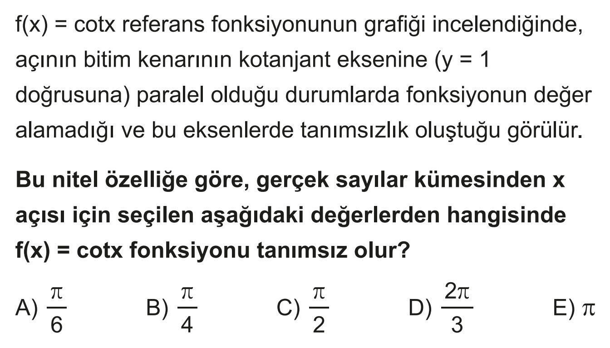
Çözüm
- $\cot x = \frac{\cos x}{\sin x}$; $\sin x = 0$ olduğu yerlerde tanımsızdır.
- $\sin x = 0$ ⇔ $x = k\pi$.
- Seçeneklerden yalnız $\pi$ bu biçimdedir.
Cevap: E
Soru 2Cevap: C
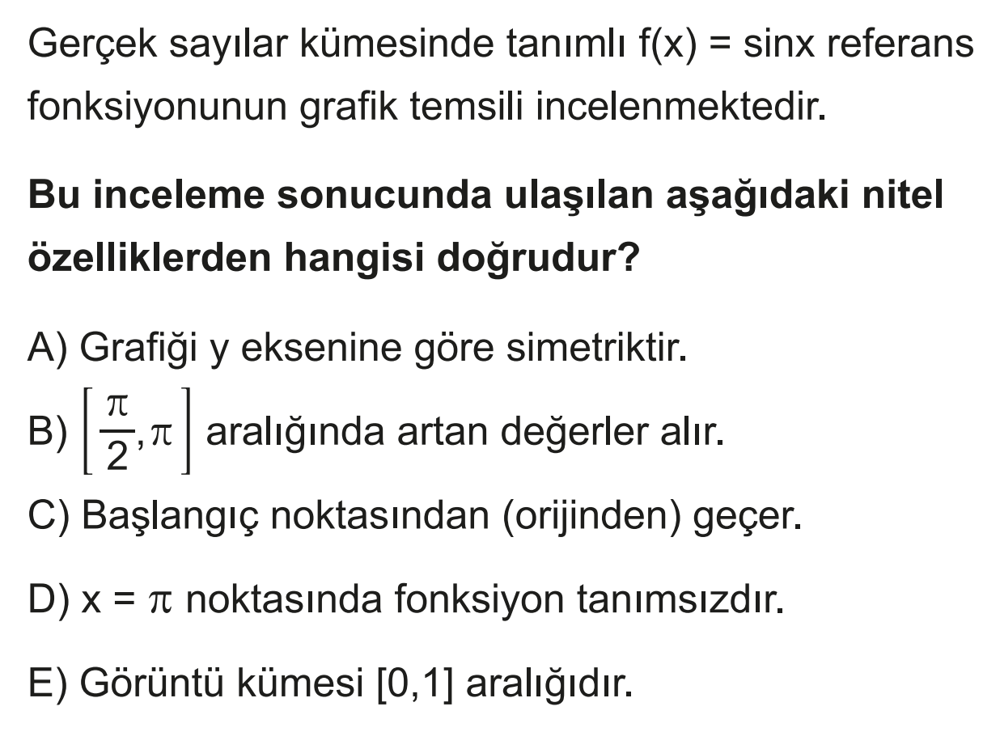
Çözüm
- $\sin x$ tek fonksiyondur; grafiği orijine göre simetriktir (A yanlış).
- $\left[\frac{\pi}{2},\pi\right]$'de azalır (B), $\sin\pi = 0$ tanımlıdır (D), görüntü kümesi $[-1,1]$ (E) → yanlış.
- $\sin 0 = 0$ → grafik orijinden geçer: C.
Cevap: C
Soru 3Cevap: A
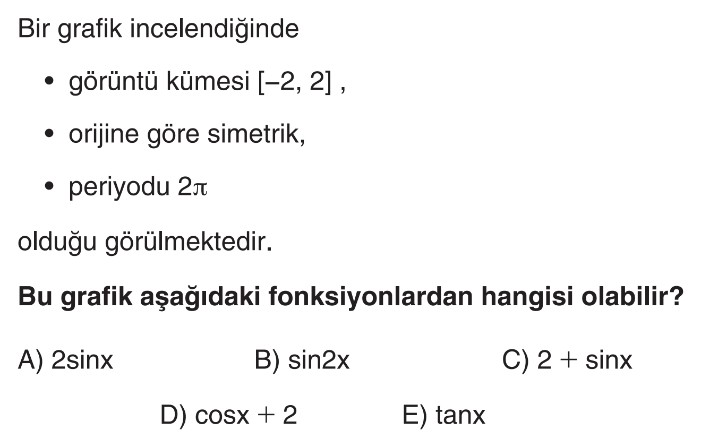
Çözüm
- Görüntü kümesi $[-2,2]$ → genlik 2, düşey öteleme yok.
- Orijine göre simetrik → tek fonksiyon (sinüs tipinde).
- Periyot $2\pi$ → $x$ katsayısı 1: $2\sin x$.
Cevap: A
Soru 4Cevap: A
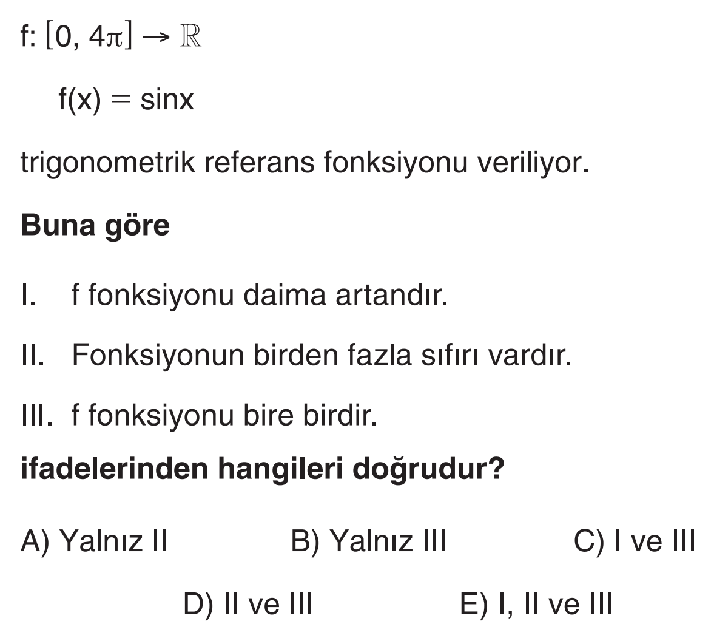
Çözüm
- $[0, 4\pi]$'de $\sin x$ artıp azalır; I yanlış.
- Sıfırları $0, \pi, 2\pi, 3\pi, 4\pi$ → II doğru.
- Aynı değeri birçok kez alır, bire bir değildir; III yanlış. Yalnız II.
Cevap: A
Soru 5Cevap: B
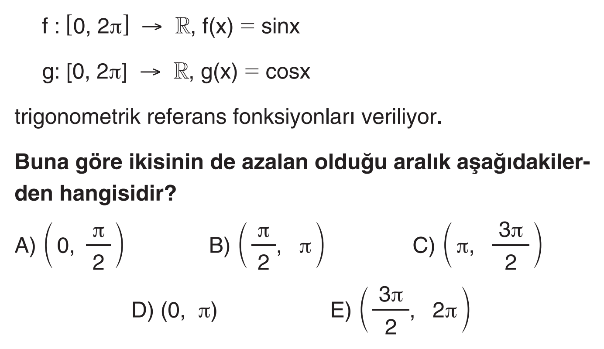
Çözüm
- $\sin x$, $\left(\frac{\pi}{2},\frac{3\pi}{2}\right)$'de azalır.
- $\cos x$, $(0,\pi)$'de azalır.
- Ortak aralık $\left(\frac{\pi}{2},\pi\right)$.
Cevap: B
Soru 6Cevap: C
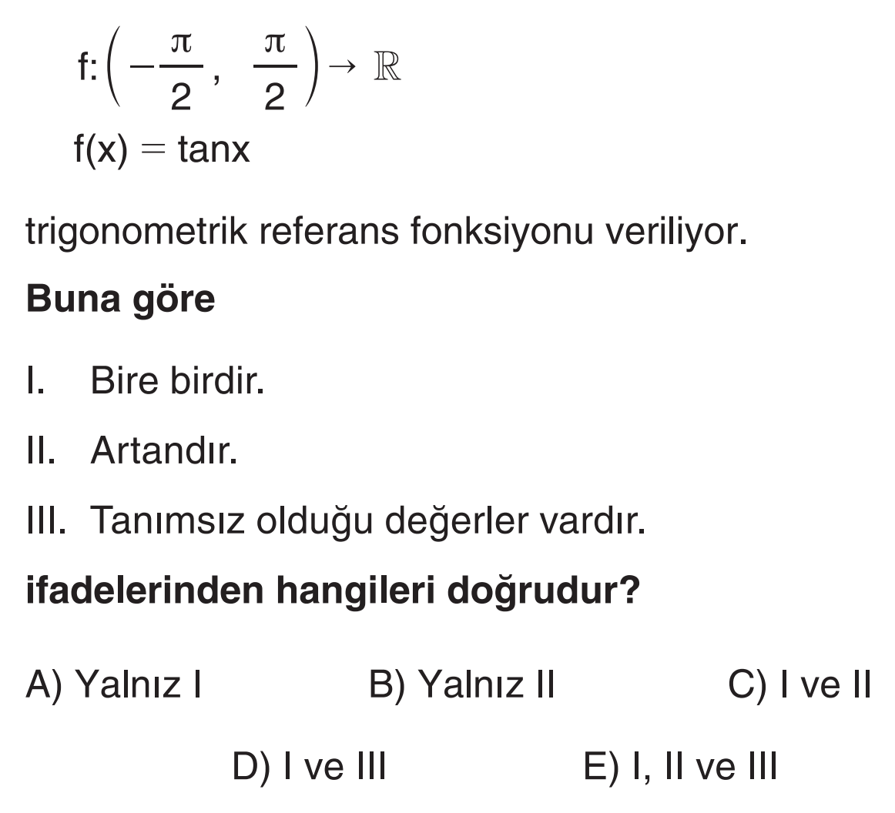
Çözüm
- $\left(-\frac{\pi}{2},\frac{\pi}{2}\right)$'de $\tan x$ sürekli artar → II doğru.
- Artan fonksiyon bire birdir → I doğru.
- Bu açık aralıkta her noktada tanımlıdır → III yanlış. I ve II.
Cevap: C
Soru 7Cevap: E
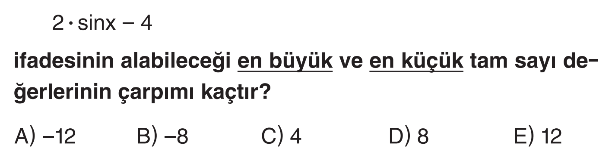
Çözüm
- $-1 \le \sin x \le 1$ → $-2 \le 2\sin x \le 2$.
- $-6 \le 2\sin x - 4 \le -2$.
- En büyük $-2$, en küçük $-6$; çarpım $12$.
Cevap: E
Soru 8Cevap: E
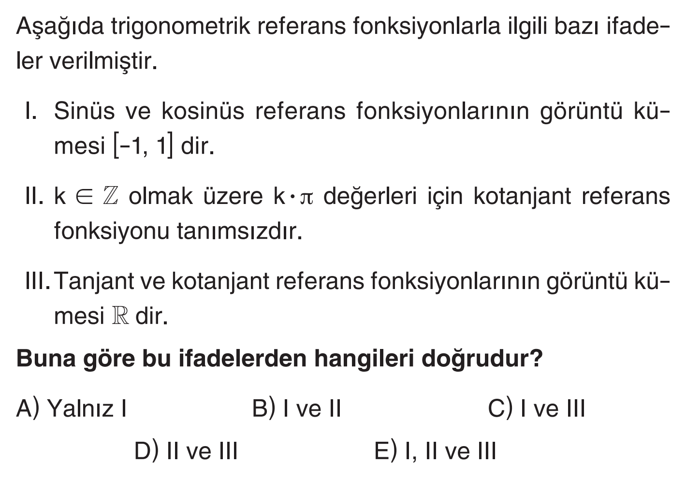
Çözüm
- I: $\sin$ ve $\cos$'un görüntü kümesi $[-1,1]$ ✓.
- II: $\sin(k\pi) = 0$ olduğundan $\cot(k\pi)$ tanımsız ✓.
- III: $\tan$ ve $\cot$ tüm gerçek sayı değerlerini alır ✓. I, II ve III.
Cevap: E
Soru 9Cevap: D
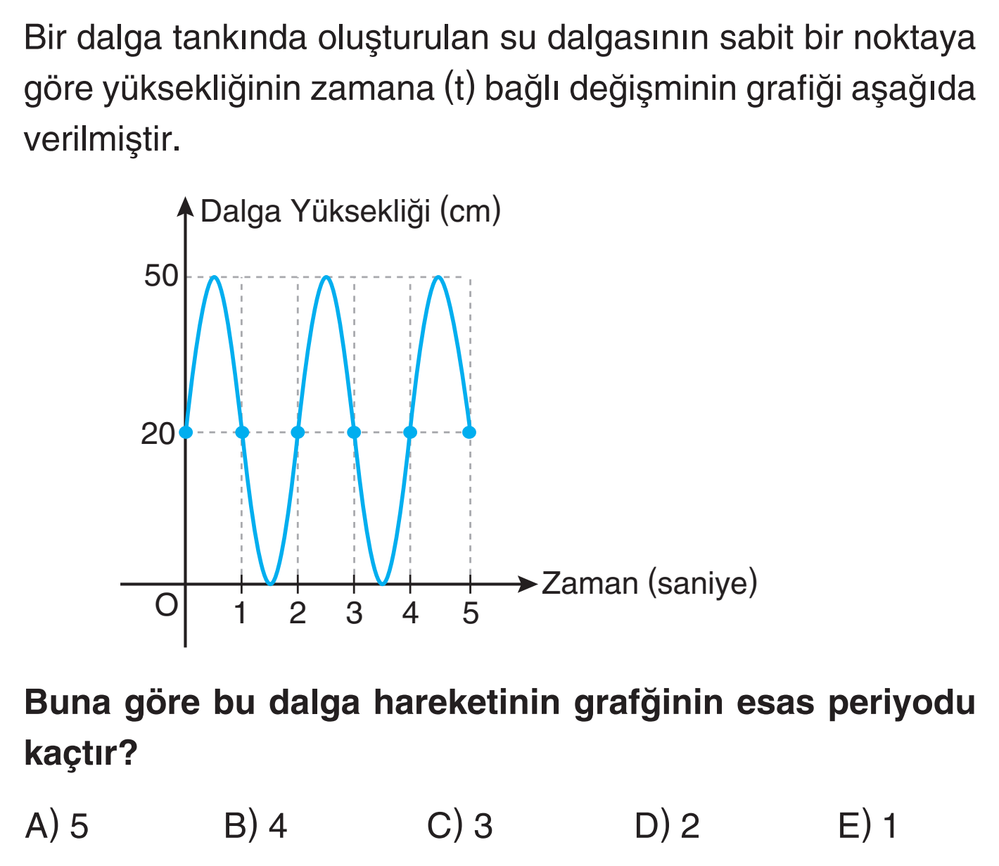
Çözüm
- Dalga yüksekliği $t = 0$'da 20 cm'den yükselip tepe yapar, 1'de yine 20 cm'dir.
- $t = 1$'den sonra çukur yapıp $t = 2$'de 20 cm'ye döner; aynı biçim tekrar eder.
- Bir tam dalga 2 saniye sürer: periyot $2$.
Cevap: D
Soru 10Cevap: B
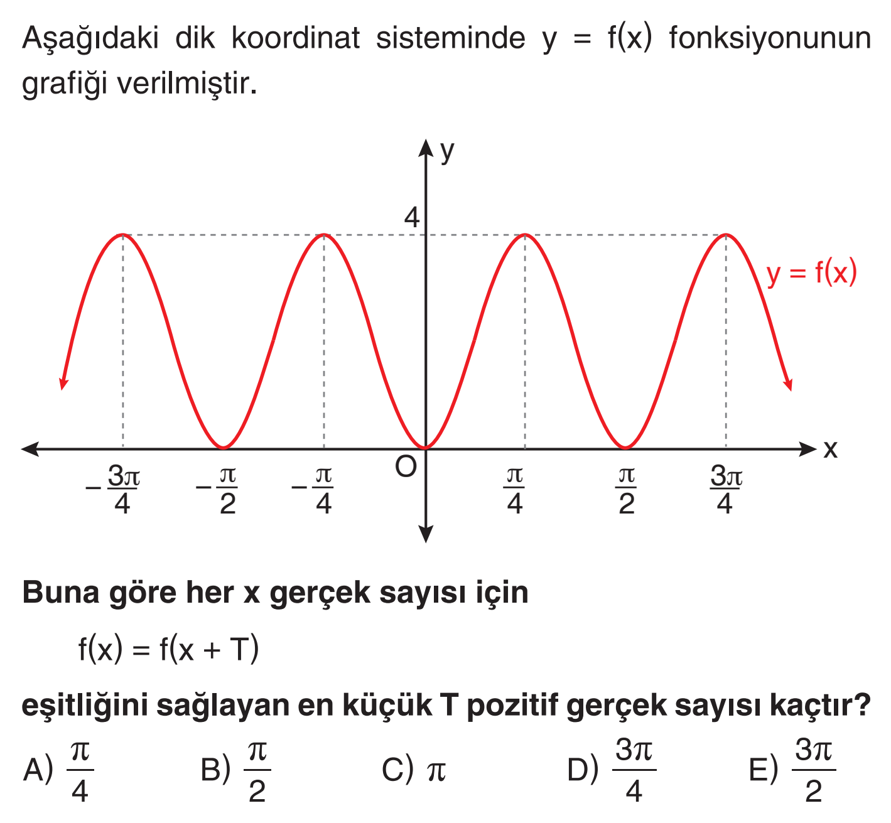
Çözüm
- Grafik $x = 0$'da 0, $x = \frac{\pi}{4}$'te 4 (tepe), $x = \frac{\pi}{2}$'de yeniden 0 değerini alır.
- Bir tepe ile sonraki tepe arası: $\frac{3\pi}{4} - \frac{\pi}{4} = \frac{\pi}{2}$.
- En küçük $T = \frac{\pi}{2}$.
Cevap: B
Soru 11Cevap: A
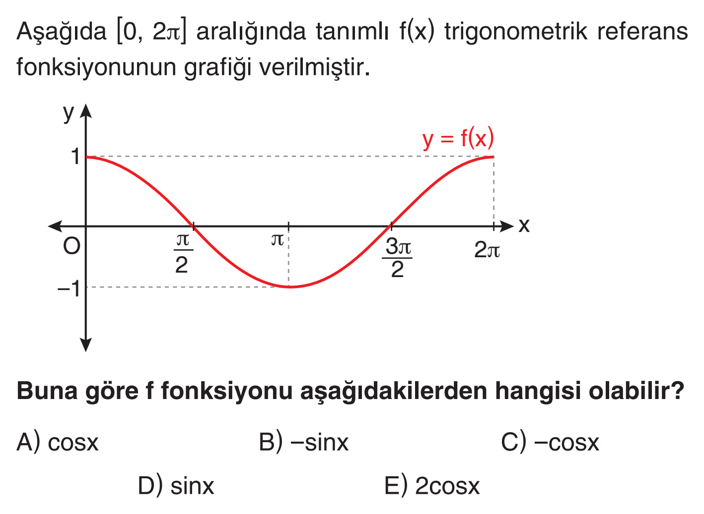
Çözüm
- $f(0) = 1$, $f\left(\frac{\pi}{2}\right) = 0$, $f(\pi) = -1$.
- $f\left(\frac{3\pi}{2}\right) = 0$, $f(2\pi) = 1$.
- Bu değerleri $\cos x$ alır.
Cevap: A
Soru 12Cevap: D
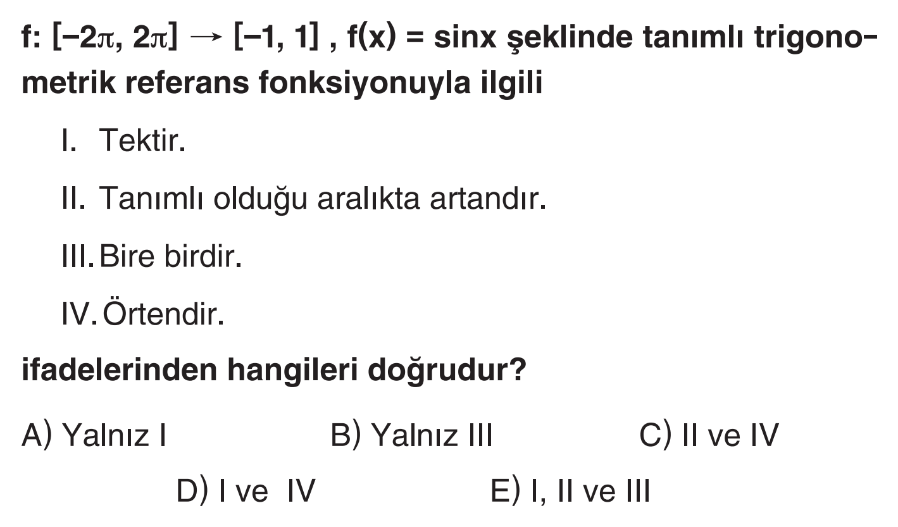
Çözüm
- Tanım aralığı $[-2\pi, 2\pi]$ simetrik ve $\sin(-x) = -\sin x$ → I doğru.
- Aralıkta artıp azalır, değerleri tekrar eder → II, III yanlış.
- Her $y\in[-1,1]$ değerini alır → IV doğru. I ve IV.
Cevap: D
Soru 13Cevap: C
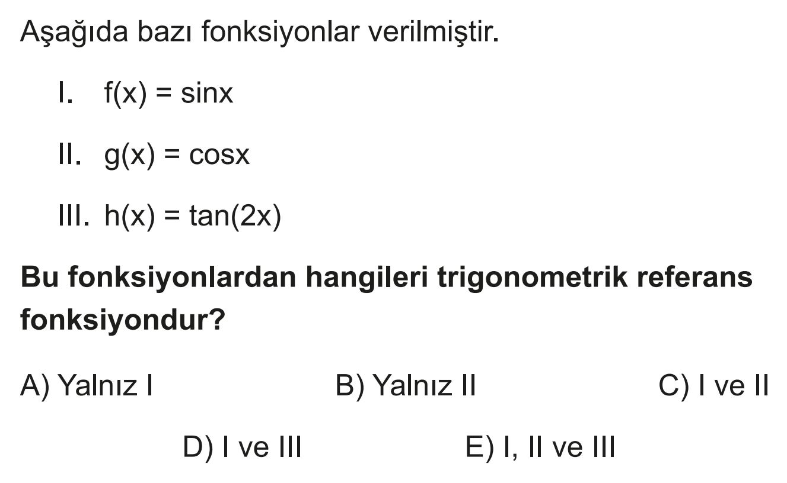
Çözüm
- Referans fonksiyonlar: $\sin x$, $\cos x$, $\tan x$, $\cot x$.
- $\tan(2x)$, $\tan x$'ten dönüşümle türetilmiştir; referans değildir.
- I ve II.
Cevap: C
Soru 14Cevap: E
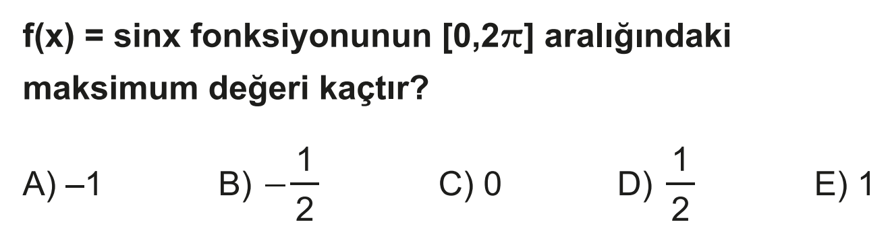
Çözüm
- $-1 \le \sin x \le 1$.
- $x = \frac{\pi}{2}$ için $\sin x = 1$ ve $\frac{\pi}{2}\in[0,2\pi]$.
- Maksimum değer $1$.
Cevap: E
Soru 15Cevap: D
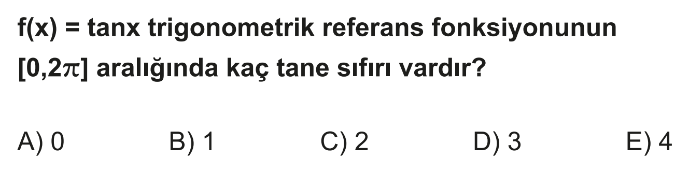
Çözüm
- $\tan x = 0$ ⇔ $\sin x = 0$ ⇔ $x = k\pi$.
- $[0,2\pi]$'de $x = 0, \pi, 2\pi$.
- 3 sıfır.
Cevap: D
Soru 16Cevap: C
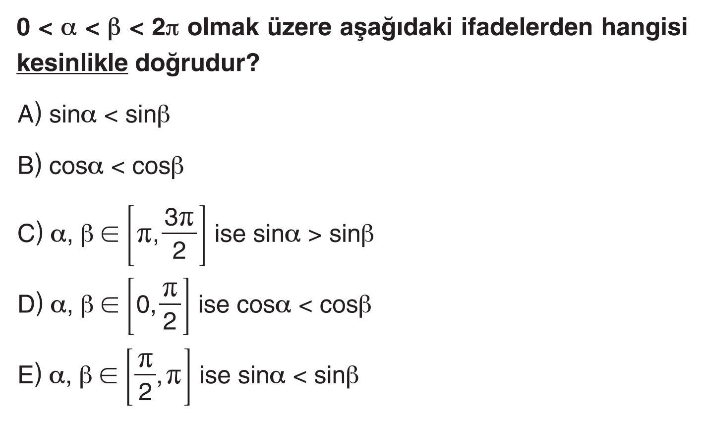
Çözüm
- $\left[\pi,\frac{3\pi}{2}\right]$'de $\sin x$ azalandır.
- $\alpha < \beta$ ise $\sin\alpha > \sin\beta$ → C her zaman doğru.
- D'de $\cos$ azalan olduğundan $\cos\alpha > \cos\beta$; E'de $\sin$ azalan → yanlış.
Cevap: C
Soru 17Cevap: D
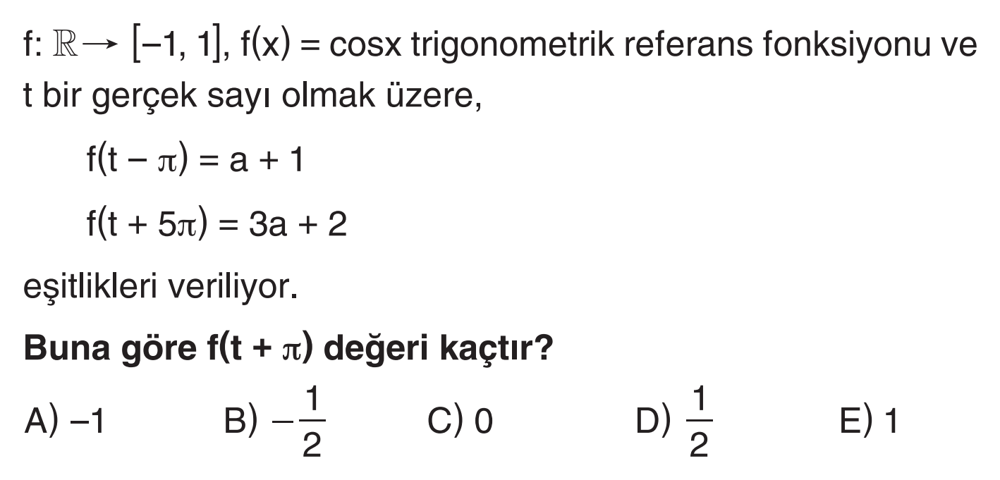
Çözüm
- $\cos$'un periyodu $2\pi$: $f(t+5\pi) = f(t+\pi) = f(t-\pi)$.
- $a + 1 = 3a + 2$ → $a = -\frac12$.
- $f(t+\pi) = a + 1 = \frac12$.
Cevap: D
Soru 18Cevap: A
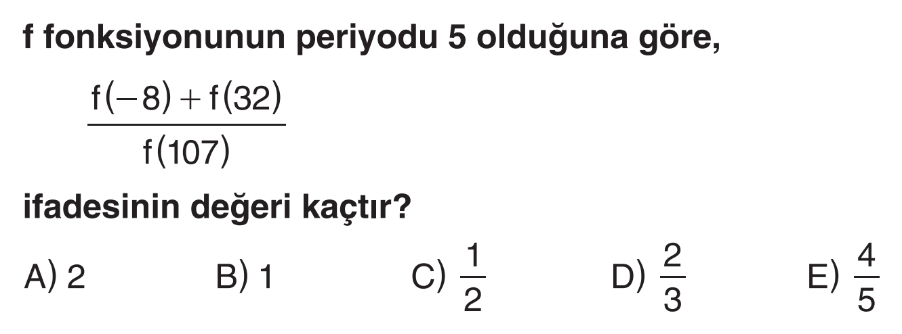
Çözüm
- Periyot 5: $f(-8) = f(-8+10) = f(2)$.
- $f(32) = f(32-30) = f(2)$, $f(107) = f(107-105) = f(2)$.
- $\frac{f(2)+f(2)}{f(2)} = 2$.
Cevap: A
Soru 19Cevap: D
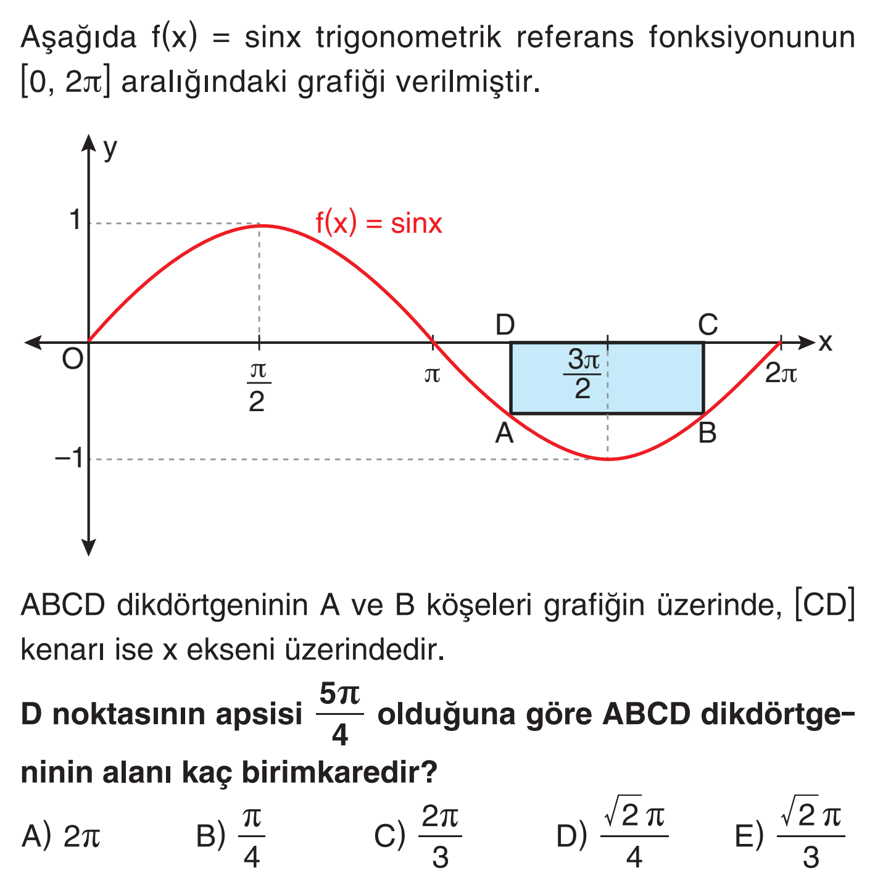
Çözüm
- Grafik $x = \frac{3\pi}{2}$'ye göre simetrik: D $\frac{5\pi}{4}$ ise C $\frac{7\pi}{4}$ → $|DC| = \frac{\pi}{2}$.
- $|AD| = \left|\sin\frac{5\pi}{4}\right| = \frac{\sqrt2}{2}$.
- Alan $\frac{\pi}{2}\cdot\frac{\sqrt2}{2} = \frac{\sqrt2\pi}{4}$.
Cevap: D
Soru 20Cevap: B
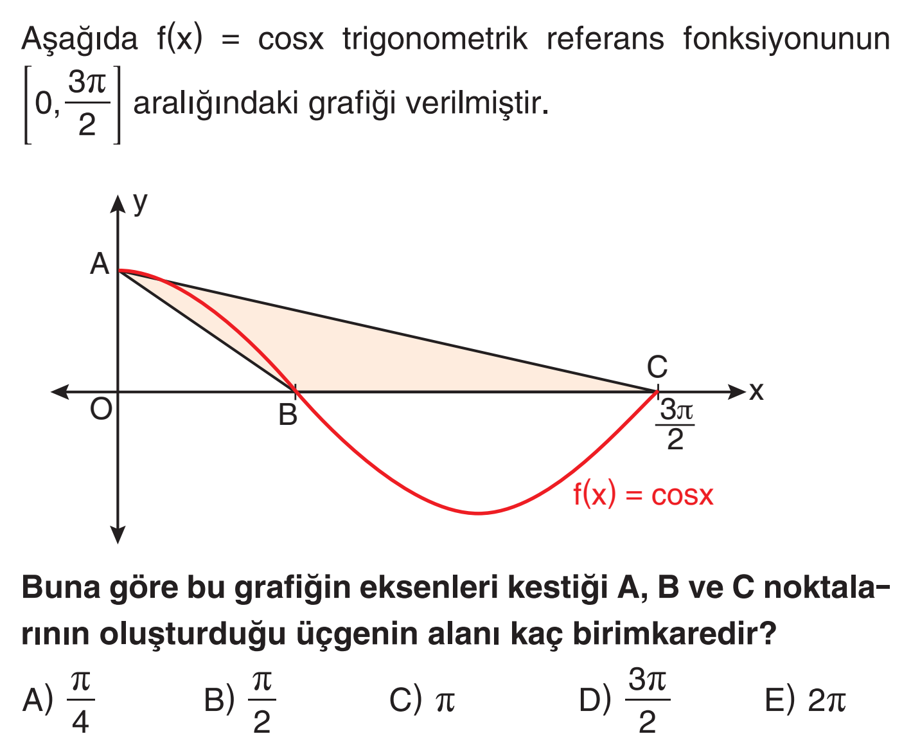
Çözüm
- $A(0,1)$, $B\left(\frac{\pi}{2},0\right)$, $C\left(\frac{3\pi}{2},0\right)$.
- Taban $|BC| = \pi$, yükseklik $|OA| = 1$.
- Alan $\frac{\pi\cdot1}{2} = \frac{\pi}{2}$.
Cevap: B
Soru 21Cevap: D
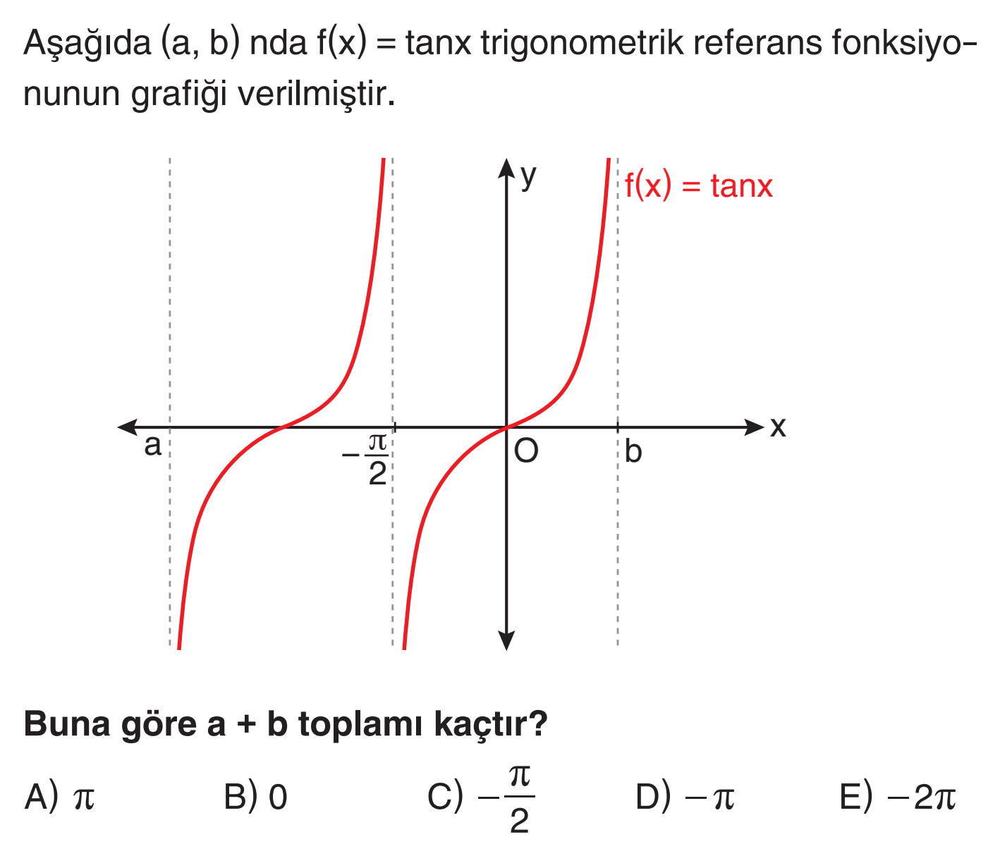
Çözüm
- Grafikte iki tam kol vardır; asimptotlar $x = -\frac{3\pi}{2}$, $-\frac{\pi}{2}$, $\frac{\pi}{2}$.
- Aralığın uçları asimptotlardır: $a = -\frac{3\pi}{2}$, $b = \frac{\pi}{2}$.
- $a + b = -\pi$.
Cevap: D
Soru 22Cevap: D
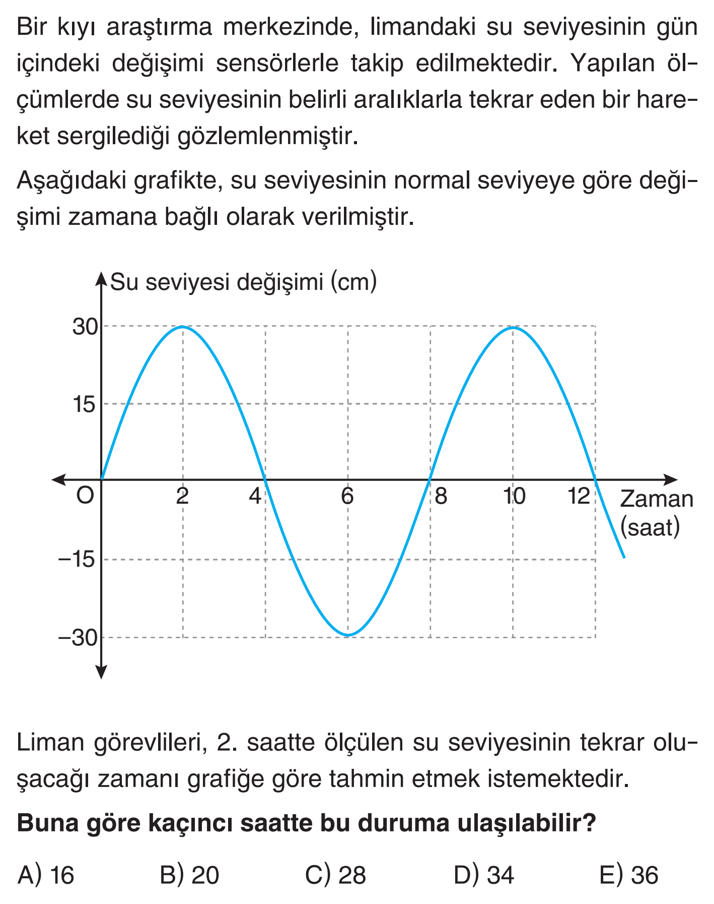
Çözüm
- Grafik $t = 0$'dan $t = 8$'e bir tam dalga çiziyor: periyot 8 saat.
- 2. saatteki seviye (30 cm) $2 + 8k$ saatlerinde tekrar eder: 10, 18, 26, 34, …
- Seçeneklerde bulunan 34.
Cevap: D
Soru 23Cevap: C
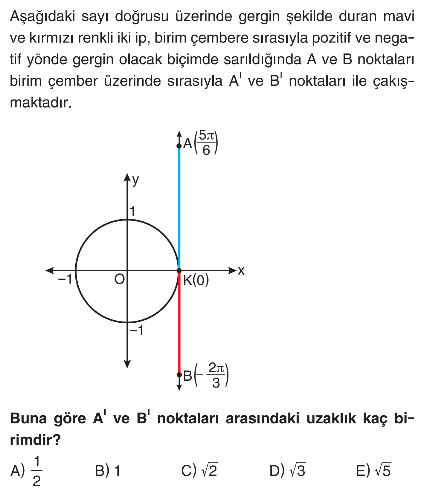
Çözüm
- $A' = \left(\cos\frac{5\pi}{6}, \sin\frac{5\pi}{6}\right)$, $B' = \left(\cos\left(-\frac{2\pi}{3}\right), \sin\left(-\frac{2\pi}{3}\right)\right)$.
- $A'$ $150^\circ$, $B'$ $240^\circ$'de; aralarındaki merkez açı $90^\circ$.
- Yarıçapı 1 olan çemberde $|A'B'| = \sqrt{1^2+1^2} = \sqrt2$.
Cevap: C
Soru 24Cevap: E
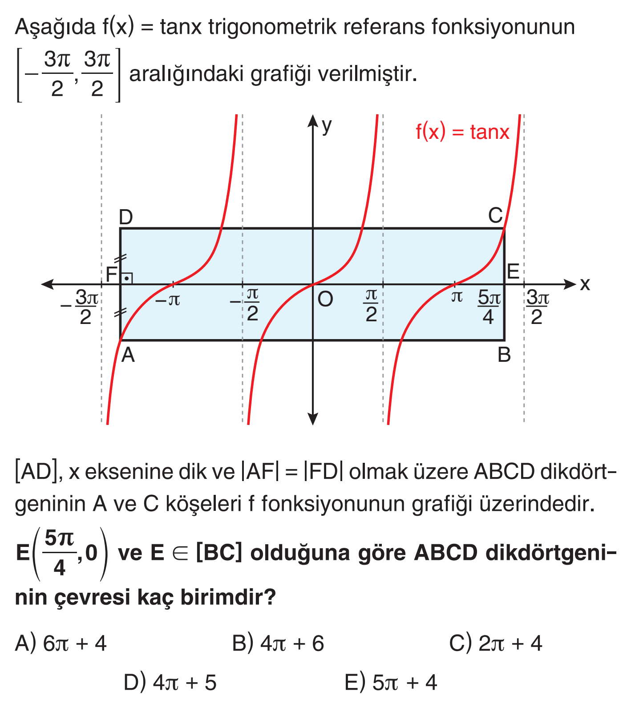
Çözüm
- $E\left(\frac{5\pi}{4},0\right)$ → $C\left(\frac{5\pi}{4}, \tan\frac{5\pi}{4}\right) = \left(\frac{5\pi}{4},1\right)$; yükseklik 2 ($|AF| = |FD| = 1$).
- A'nın ordinatı $-1$ ve sol kolda: $\tan x = -1$ → $x = -\frac{5\pi}{4}$.
- Genişlik $\frac{5\pi}{2}$; çevre $2\left(\frac{5\pi}{2} + 2\right) = 5\pi + 4$.
Cevap: E